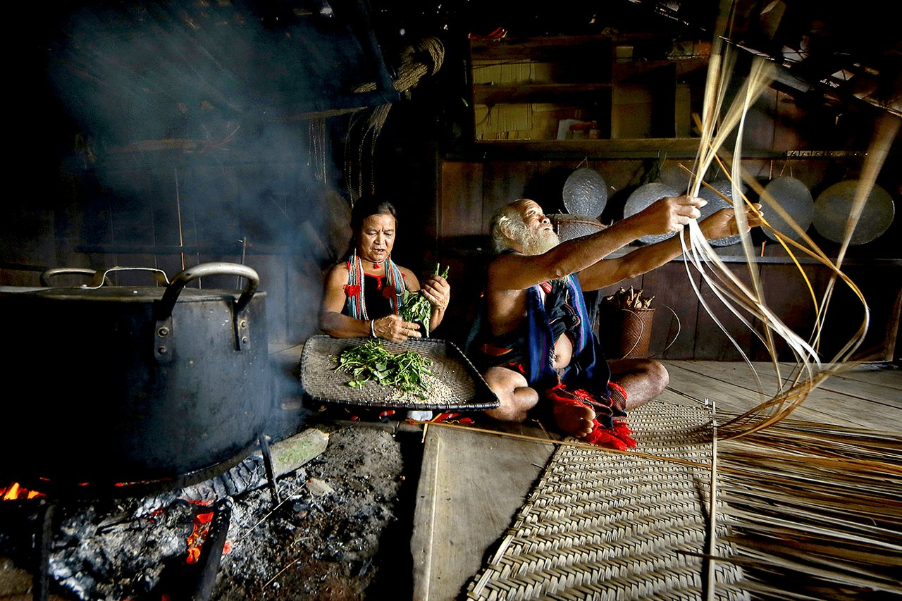
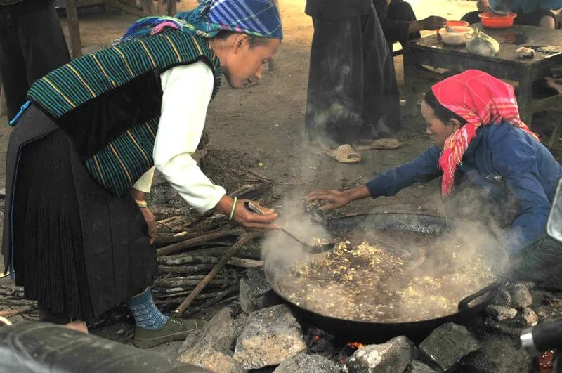
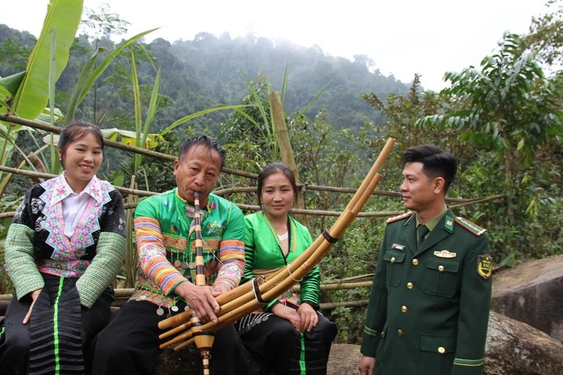
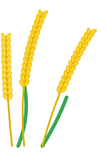

Bếp lửa, bà, mẹ, tiếng hát, làng nghề
Bài chính mùa đông
Bếp lửa trong mắt em: Chuyện văn hóa vùng cao bắt đầu từ căn bếp
Mùa đông tràn qua những mái sa mộc Quảng Nam, mang theo cái lạnh thấu xương bám chặt lấy những vệt sương muối trên nương. Giữa căn nhà sàn xám màu thời gian, bên bếp lửa đỏ hồng nơi hong khô đôi bàn tay nứt nẻ của trẻ em vùng cao và là nơi lưu giữ tiếng cười, câu chuyện bản làng đồng thời nhen nhóm những ước mơ tìm chữ dưới mái tranh nghèo.
Đọc bài
Tin bài mùa đông
6 bài
Món ăn mùa đông của em: Mèn mén, thắng cố, bắp ngô nướng ấm lòng giữa sương núi
Mùa đông tràn về trên đỉnh núi, mang theo những đợt gió rét thấu xương bám chặt lấy lớp ván thưng nhà sàn và những dải sương muối trắng xoá ngoài nương ngô. Trong cái lạnh buốt bàn chân của trẻ em vùng cao, những món ăn giữ nhiệt dân dã như bát mèn mén dẻo bùi, chảo thắng cố nghi ngút khói hay bắp ngô nướng xém than bên bếp lửa đã mang lại hơi ấm cho cái bụng xót xa và đơm đầy ký ức tuổi thơ cho mùa giá rét của bà con bản làng.

Tiếng khèn đêm đông: Ngôn ngữ không lời của núi rừng sưởi ấm tuổi thơ vùng cao
Sương muối nhuộm trắng những rặng sa mộc nơi đỉnh mây, vắt qua ván thưng nhà sàn cái lạnh buốt giá của mùa đông rét đậm. Giữa khoảng lặng mênh mông của vách đá dựng đứng, tiếng khèn H'mông vang lên như một ngọn lửa không cháy bằng củi mà bằng hơi thở - mang theo câu chuyện của ngọn núi, tấm lòng của người lớn và những bài học làm người đầu đời cho trẻ em vùng cao.

Mùa đông - Mùa bà dạy em thêu hoa trên vải: Nhịp chỉ gieo ước mơ nơi lưng chừng mây
Giữa cái tĩnh lặng của mùa đông trên bản, tiếng lách cách của khung dệt gỗ cùng mùi chàm thơm nồng ủ ngấu trở thành nhịp thở quen thuộc. Đó là lúc các bà, các mẹ lặng lẽ cầm tay dạy con gái cách thêu hoa trên vải, nhuộm chàm, đếm chỉ - trao truyền lại cả một kho tàng văn hóa qua từng đường kim mũi chỉ.
Mùi trà Shan Tuyết và chè dây: Nhấp ngụm thanh khiết giữa sương giăng sưởi ấm mùa đông vùng cao
Mùa đông trên bản em kéo về bằng những dải sương muối bám trắng xóa trên vách ván nhà sàn. Giữa cái lạnh cắt da cắt thịt làm đôi bàn chân chúng em co ro bên bếp lửa, mùi trà Shan Tuyết cổ thụ thơm nồng quyện cùng bát chè dây rừng nghi ngút khói lại trở thành thức uống sưởi ấm lòng người, hun đắp tình yêu trẻ thơ.
Hành trình của chiếc áo nỉ chuyền tay qua 4 anh em: Vệt màu đỏ sưởi ấm mùa đông vùng cao
Mỗi khi cơn gió rét đậm từ đỉnh núi đá tràn về, quét qua vách nứa nhà sàn, chiếc áo nỉ màu đỏ rực lại được gỡ xuống từ sào tre góc gác bếp. Qua bốn mùa đông dằng dặc, chiếc áo nỉ chuyền tay qua 4 anh em đã phai dần màu đỏ gốc, lốm đốm những miếng vá thổ cẩm xám xanh. Nhưng với trẻ em vùng cao chúng em, chiếc áo ấy không chỉ là vật che chắn cái lạnh cắt da cắt thịt, mà là câu chuyện về tình anh em, sự chắt chiu và hơi ấm yêu thương chuyền qua từng thế hệ.

Gia tài của thanh củi khô: Ngọn lửa sưởi ấm đôi má em giữa đêm rét vùng cao
Mỗi khi sương muối bám trắng xóa vách ván nhà sàn, gia tài của thanh củi khô chất dưới gầm bếp lại trở thành điểm tựa sưởi ấm cho lũ trẻ em vùng cao chúng em đi qua những ngày giá rét. Nhìn những nhánh sa mộc chắt chiu từ nương đá lặng lẽ bắt lửa, em thấy từng vệt khói thơm nồng mùi nhựa rừng tỏa lan, hóa thành ngọn lửa sưởi ấm mùa đông che chở cho đôi má đỏ nẻ và tiếp thêm sức mạnh cho hành trình tìm chữ nơi bản xa.